The Integrations hub v0.4¶
Integrations in the sidebar of the web app (G then I) is where a fitted model
goes out of the platform. For example, a spreadsheet scores the model, a dashboard embeds its
chart, or your pipeline gets a message when a fit is ready. Each action on these pages is one
or two calls of the HTTP API.
Integrations tells the concepts: the promotion gate, signed
webhooks, and embed links only for platform recipes.
Endpoints and webhooks does the same tasks with curl.
The hub has four tabs:
- Overview: The Guided cards and the entry points for developers.
- Endpoints.
- Webhooks.
- Plots and links.
The last step of Guided mode, Share, goes to the hub. If you make an endpoint or a chart link in that step, the hub lists it immediately. Its Code for this endpoint button opens the snippets of the endpoint. In a project that is locked to Guided mode, the hub stays in the navigation.
Overview: connect in a few steps¶
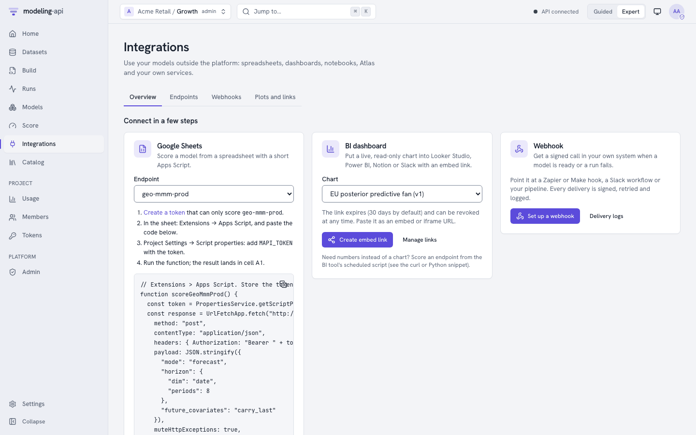
Three cards cover the usual cases. You do not need to read API documentation:
| Card | What you get | You need |
|---|---|---|
| Google Sheets | The Apps Script that scores an endpoint from a sheet, with the steps to install it. The script reads the rows of a sheet with the name Input, or it uses the example call. The Input sheet has a header row with the dims and inputs of the endpoint, and one row for each coordinate. For a forecast, it has your actuals and the dates to forecast, with the target empty. The card shows a preview. The script writes the summary of the answer (mean and 90% interval for each coordinate) to a sheet with the name Result. Above the summary, it writes a note that tells the conditions of the forecast |
An endpoint. A token from Create a token. This token can only score that endpoint |
| BI dashboard | A read-only embed link that expires, for Looker Studio, Power BI or Notion. Slack shows a link as a card without the chart. For Slack, post the PNG | A saved plot of a platform recipe |
| Webhook | A signed call to your URL when a model is ready or a run fails | The project admin role |
Below the cards, For developers has links to these items:
- The endpoints.
- Scoped tokens.
- The interactive API documentation of the server (
/docs). - The OpenAPI 3.1 document of the server (
/openapi.json).
Endpoints and aliases¶
The Endpoints tab lists the endpoints of the project. For each endpoint, it shows the alias, the model version that it serves and its revision. It also shows the gate that it passed and the date of the promotion. To open the page of an endpoint, click it.
Promoting through the gate¶
Only project admins can promote.
- Click Promote a model.
- Type the name of the endpoint, and select a model and a version. The dialog shows the sanity scorecard of the version and the expected gate.
- Click Promote. The server decides:
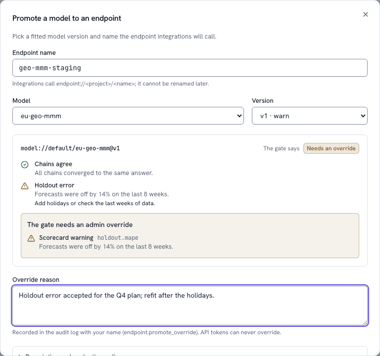
| The gate says | The dialog | What to do |
|---|---|---|
| Passes | The endpoint page opens on the new revision | - |
Needs an override (409 OVERRIDE_REQUIRED) |
The reasons, each with its check (holdout.mape), and an Override reason field |
A project admin who is signed in to the app writes the reason and clicks Override and promote. The audit log records the override as endpoint.promote_override. An API token cannot override |
Blocked (409 PROMOTION_BLOCKED) |
The reasons. No override | The cause is a scorecard that fails, a fit that stopped, a train_only fit or an input change that breaks callers. Repair the cause and promote a new version |
The server also checks two things that the app cannot see:
- The version was fitted again on all the data after its holdout evaluation.
- Its input contract still agrees with what callers send.
Thus an expected Passes can still come back blocked. Description and evaluation policy sets the EvaluationPolicy of the endpoint. With it, you can accept exploration fits. You can also block, warn about or allow changes to the input contract. If a different person promoted the endpoint while the dialog was open, the server refuses the old revision. The dialog tells you this.
An endpoint's page¶
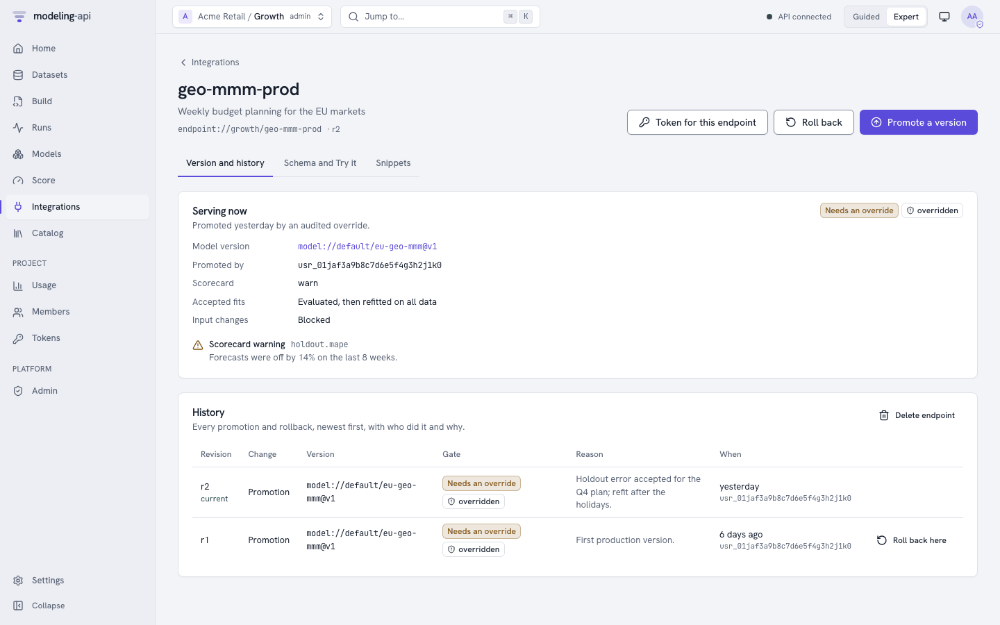
-
Version and history: This shows these items:
- The version that serves now, with a link to its model page.
- The person who promoted it, and how.
- The reasons of the gate.
- Each promotion and rollback with its reason.
Roll back goes back to the version of the previous revision. Roll back here goes back to an earlier revision. The two buttons ask for a reason, and the audit log records it. A rollback does not run the gate again, because that version passed it before. Delete endpoint needs you to type the alias. Integrations that call a deleted endpoint get
404. -
Schema and Try it: This shows the input contract from the time of the promotion. The contract has the score modes, the dim that a forecast extends, and the dimensions and variables. It also shows the example call. To try your own call, edit the call first.
- Validate runs the static checks of the server (
POST …/validate). - Score does a real score run (
POST …/scorewithPrefer: wait=30). It needs the runner role.
A forecasting endpoint also has Your latest actuals and the dates to forecast. This is its input table: the time column, the target and the drivers. The periods after the fit are rows. To use it, do these steps:
- Fill the target where you have actuals.
- Leave the target empty on the dates to forecast. Use Add a period or Paste from a spreadsheet.
- Click Use in the call.
After Score, a note above the first summary tables tells the conditions of the forecast. Examples are Conditioned on 3 actuals through 1961-03-01 and From the end of the fitted history (Forecasts with actuals).
- Validate runs the static checks of the server (
-
Snippets: Code that is ready to run for Python, TypeScript, curl, R, Apps Script and Notebook. Notebook is a Jupyter or marimo cell that returns an
xarray.Dataset. The server makes the code with the example call. The app shows and copies the code exactly as the server wrote it. Each snippet tells what to install first. Snippets never contain a secret. They read the token fromMAPI_TOKEN.
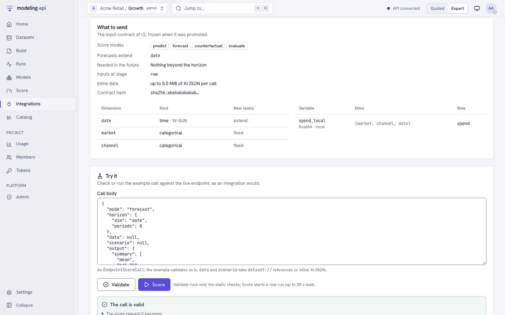
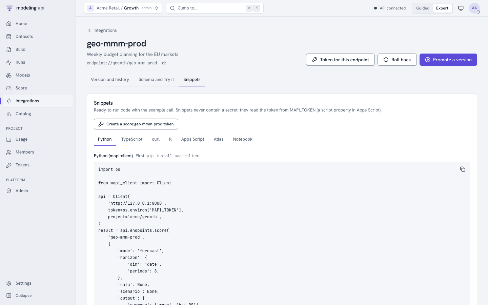
Token for this endpoint opens the New token dialog of the Tokens page. Create a
score:… token on the Snippets tab opens the same dialog. The dialog is filled for a
score:<alias> token. This token can read and score that endpoint and nothing more. Its
initial limit is 120 requests each minute.
Webhooks¶
The Webhooks tab is for project admins. Other users see why the tab is empty. The tab lists
each webhook with its events, its status and its last delivery. New webhook asks for an
https URL, a description and the events to send. The
platform refuses URLs on private or internal addresses (WEBHOOK_URL_BLOCKED). It tells you
this below the URL field.
The app shows the signing secret one time, immediately after you make the webhook. Copy
the secret into the configuration of your receiver. The Done button of the dialog stays
disabled until you copy the secret, or tick that you stored it. The dialog also shows the
lines of code that verify the Mapi-Signature of a delivery.
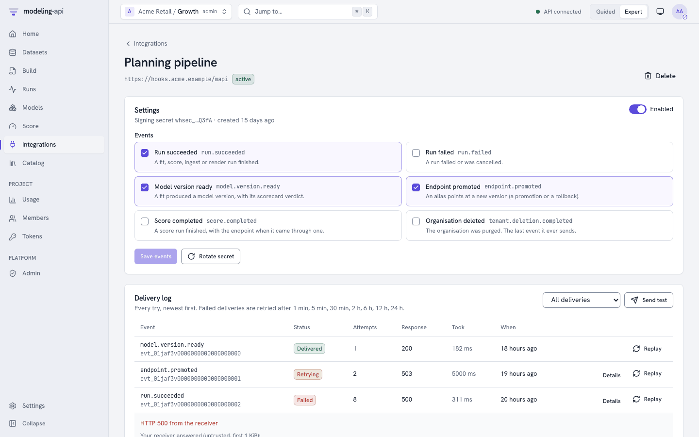
The page of a webhook has these items:
- Settings: Enable or disable the webhook, and change its events. Rotate secret makes a new secret. The app shows the new secret one time. The old secret continues to sign for 24 hours.
-
Delivery log: Each try, newest first. For each try, the log shows the event and its status (Delivered, Retrying, Failed, Blocked, Pending). It also shows the try number, the response code of your receiver and the duration.
- Details shows the error, the next retry and the first KiB of the answer of your receiver, as untrusted text.
- Replay sends a delivery again.
- Resend newest sends the newest delivery again. Thus you can check a receiver that you repaired.
There is no synthetic test event. A new webhook gets its first delivery from the next subscribed event in the project. Examples are a fit or a score that finishes, a version that is ready, or a promotion.
-
A webhook that continues to fail is disabled automatically. This occurs after 20 failed events in a sequence, or after a
410 Gone. The page tells the reason. To enable the webhook again:- Repair the receiver.
- Switch the webhook on again on this page, or with
mapi webhooks update WEBHOOK_ID --enable. This sets the failure count to zero.
Plots and links¶
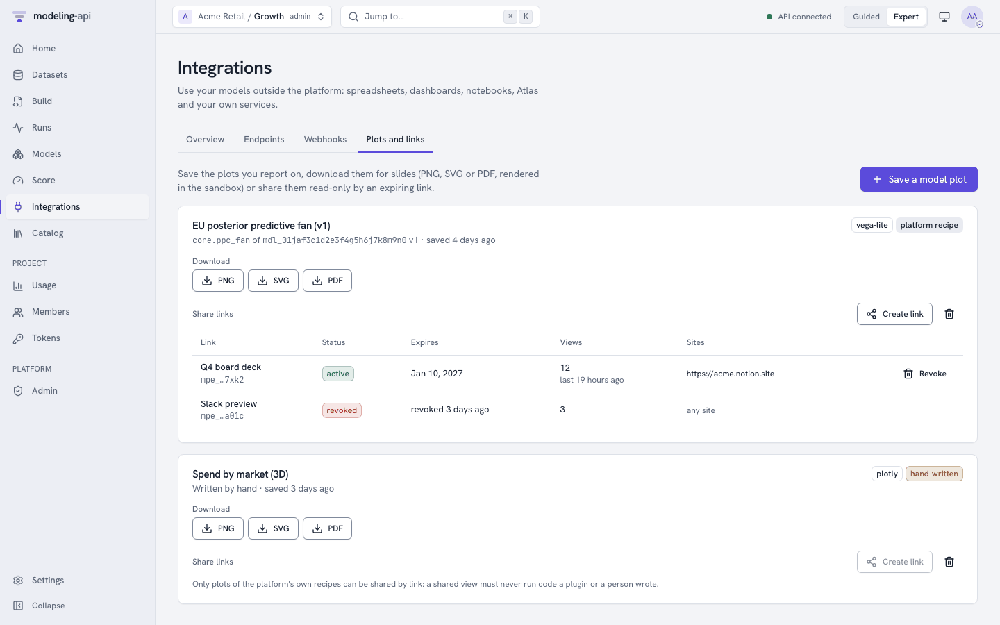
The Plots and links tab keeps the plots that you use in reports:
- Save a model plot selects a model, a version and one of its plots. The Share button in the plot gallery of a model version opens the same dialog, already filled. A saved plot continues to point at that version. Thus a link to it never changes when you fit the model again.
- Download renders PNG, SVG or PDF in the sandbox. This is a
renderrun, and it needs the runner role. The app monitors slow formats until they finish. It checks the checksum of the file before it saves the file. Plotly figures need kaleido and a Chrome in the runner image. If the server answersMODE_NOT_SUPPORTED, the app disables the Plotly download buttons and shows the reason of the server. - Create link makes a read-only link with a token. The link expires after 7 to 365 days,
and the default is 30 days. Optionally, you can limit the link to the sites that can frame it
(https origins). You can share only plots of the recipes of the platform. For other plots,
the app tells why the button is disabled. The app shows the link and its
<iframe>code one time. The table below each plot lists its links with their status, expiry and view count. Revoke stops a link immediately. Then viewers see "This link has expired".
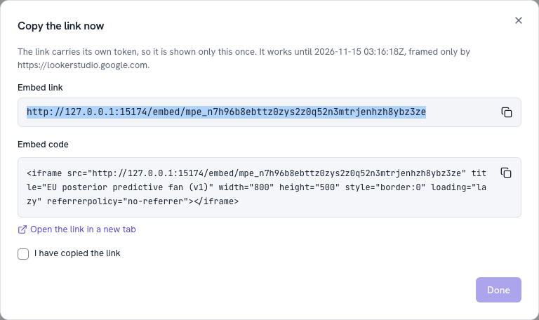
See Sharing plots for what the embed page loads and does not load.
Sign-up and e-mail verification¶
If the server allows self-service sign-up, the sign-in screen has a link to Create a
workspace (/signup). This page works without a session:
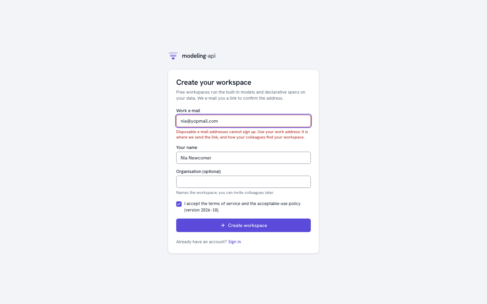
- Type a work e-mail and your name. Optionally, type the organisation. The organisation gives the workspace its name.
- Accept the terms. The terms of service and the acceptable-use policy open in a new
tab. These are
/termsand/acceptable-use, or the documents of the installation thatVITE_TERMS_URLandVITE_ACCEPTABLE_USE_URLset. The e-mail field refuses disposable e-mail addresses. If sign-up is closed on the server, the page tells you this. - Look at your e-mail (Check your inbox). The answer is the same if the address already
has an account or not. The link works one time, for 24 hours. Send the link again
replaces the link. On a development server, the page links directly to the mail in the
outbox (
make outbox). - Open the link. It opens
/verify-email, which removes the token from the address bar. - Click Confirm and create my workspace. The app makes a
public-tier workspace with adefaultproject, and makes you its admin. - Click Sign in. The usual identity-provider flow starts and opens the new workspace in Guided mode.
If the link expired or you used it before, the page tells you how to get a new link.
Settings > Data¶
Organisation admins find a Data section at the bottom of Settings:
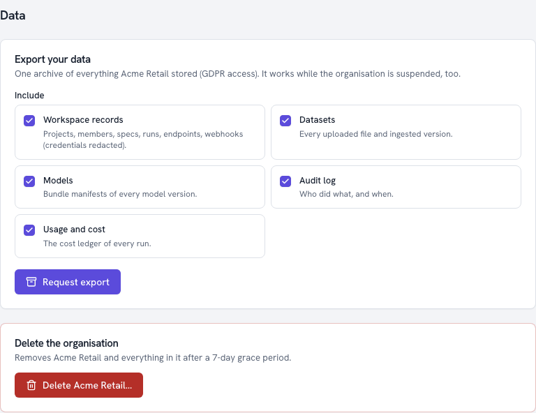
- Export your data puts all the data that the organisation stored into one archive. You select the items: workspace records (with credentials removed), datasets, model manifests, the audit log and the cost ledger. The page monitors the export and shows Download archive. The link is valid for 15 minutes. For a new link, reload the page. Exports work while the organisation is suspended.
- Delete the organisation needs you to type the organisation id. The platform suspends the organisation (read-only) immediately and cancels its runs. For 7 days, a banner on each page tells when the purge starts. Cancel the deletion restores the organisation. Then the platform purges each store, and shows the progress for each store. The platform keeps the audit log (pseudonymised) and the cost ledger (amounts only) for their legal retention. See Deleting and exporting data.
Admin console additions¶
Platform operators get these items in Admin:
-
Sign-ups: The review queue of sign-ups that a Sybil heuristic flagged. The heuristic looks for the same network address, the same browser, a repeated address, or a burst from one domain. The queue gives the reasons in plain words. Approve removes the flag. Reject suspends the workspace that the sign-up made. The two buttons need a reason, and the audit log records it.
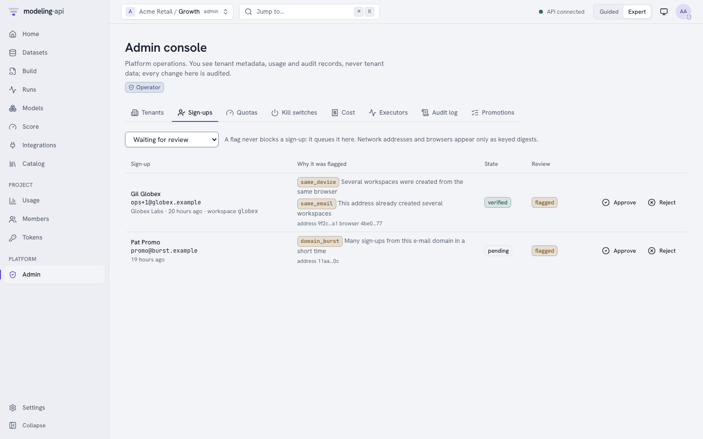
-
Trust on each tenant row: This shows the e-mail and identity verification of the tenant, and if uploaded code is allowed. Mark identity verified sets the verification, with the method and a reason. You can also withdraw it. The row also shows the status of the deletion for each store. After a failure, use Retry the purge.
-
Promotions: The endpoint promotions that needed attention, across tenants and newest first. These are admin overrides of the scorecard gate, with the reason and the checks that failed. They are also refused promotions: blocked, or with a need for an override. Nothing waits in a queue, because the gate decides each promotion immediately. The rows come from the audit log (
endpoint.promote_override, andendpoint.promotewith the outcomedenied).